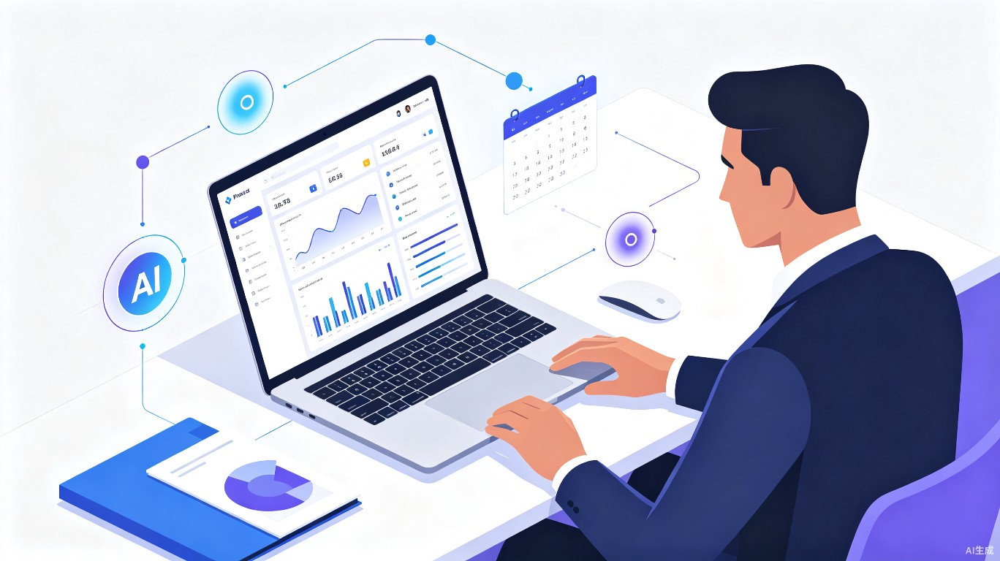
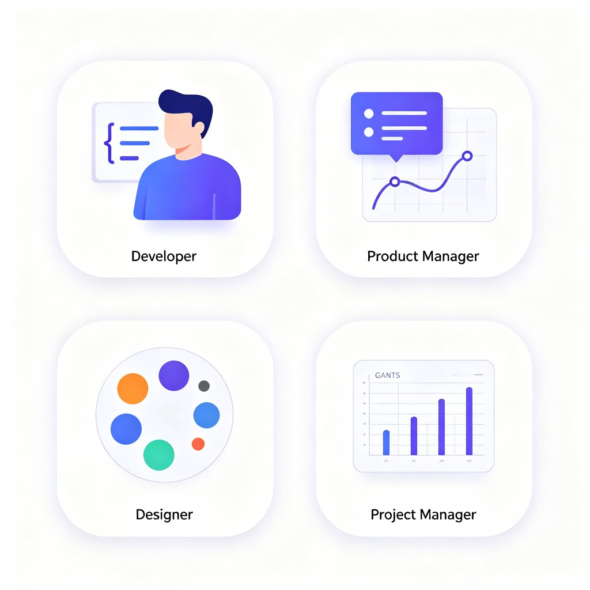
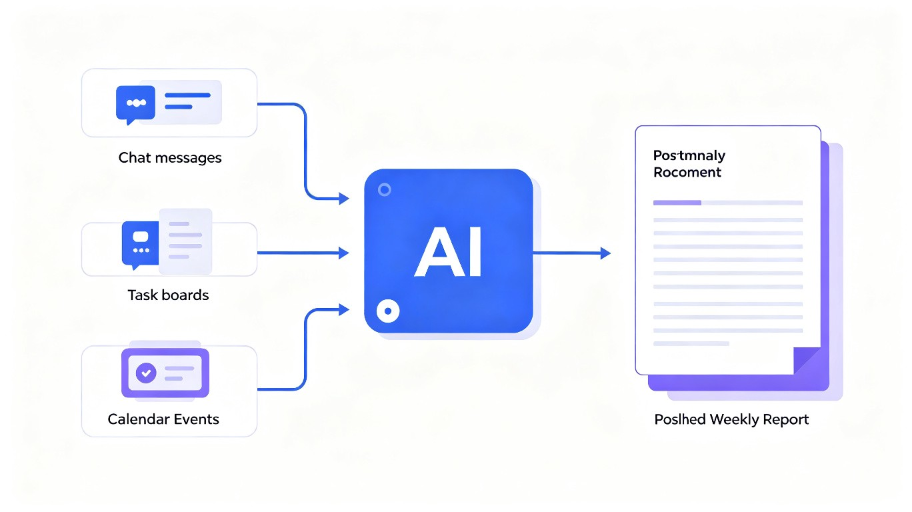

我们解决了什么问题？
在现代企业中，周报和日报是团队协作和向上汇报的核心环节。然而，大多数团队成员在撰写时面临四大痛点：
不知道写什么
每天做了很多事情但难以提炼重点，坐在电脑前发呆半小时
角色定位模糊
产品、开发、设计、运营关注点不同，但工具只给通用模板
团队任务脱节
个人周报和团队目标缺乏关联，领导看不到贡献映射
领导不满意
格式不统一、重点不突出、缺乏数据支撑，周报变形式主义
智汇周报是什么？
智汇周报（SmartReport）是一款 AI 驱动的智能汇报助手。它通过分析团队协作数据（飞书/钉钉消息、任务看板、日历事件等），根据用户在团队中的角色定位，自动生成贴合岗位职责、对齐团队目标、让领导满意的周报/日报。
核心差异化
不是简单的"AI 总结工具"，而是团队角色感知的汇报系统。产品经理的周报侧重需求进展和用户反馈，开发者的周报侧重技术交付和代码质量，完全贴合角色。
产品形态
以 Web 应用为主，支持飞书/钉钉/企业微信 Bot 推送，未来可扩展为桌面端和移动端。轻量级 SaaS 工具，即开即用。
不同角色，不同视角
智汇周报会根据团队中的角色自动调整汇报视角和内容重点：

开发者
代码提交、Bug 修复、技术方案进度
产品经理
需求评审、版本迭代、用户反馈跟进
设计师
设计稿交付、评审反馈、视觉优化
项目经理
里程碑进展、风险预警、资源调配
三步自动生成
数据接入
连接飞书/钉钉群消息、任务看板、日历事件等数据源
AI 角色分析
基于团队角色自动筛选、分类、提炼本周工作内容
一键生成
输出结构化周报，对齐团队目标，支持编辑微调

使用前后对比
技术实现方案
利用 TRAE 生态进行快速原型开发和迭代：
核心模块
数据采集层：对接飞书/钉钉 OpenAPI，获取群聊记录、任务看板数据、日历事件
AI 分析层：使用 LLM 进行角色感知的内容分类、关键信息提取、目标对齐分析
模板引擎：预设 4+ 种角色汇报模板，支持自定义扩展
用户界面：Web 端仪表盘，支持一键生成、编辑、导出、Bot 推送
价值与意义
效率价值
将每周 30-60 分钟的周报撰写时间压缩至 2-3 分钟审核确认。团队整体每周可节省数十小时的人力成本。
商业价值
可嵌入飞书/钉钉/企业微信等协作平台，作为企业级 SaaS 工具付费。中国有数千万职场人每周写周报，市场空间巨大。